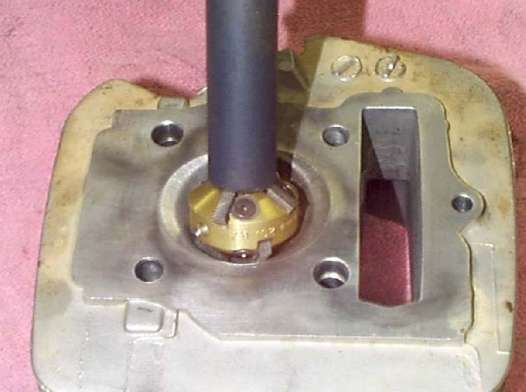
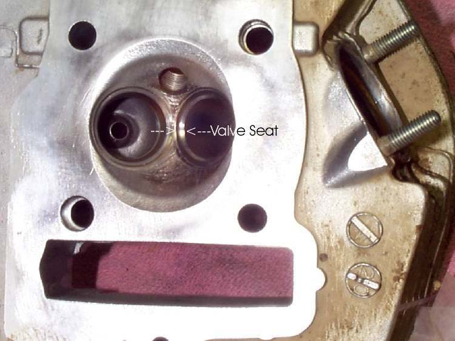
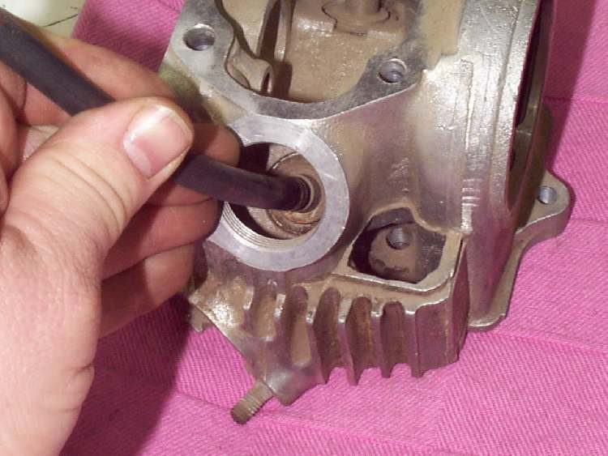
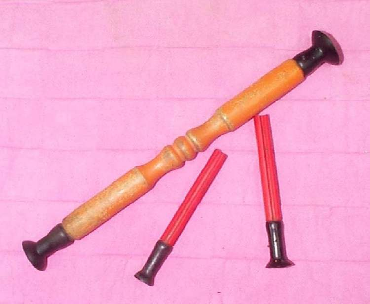
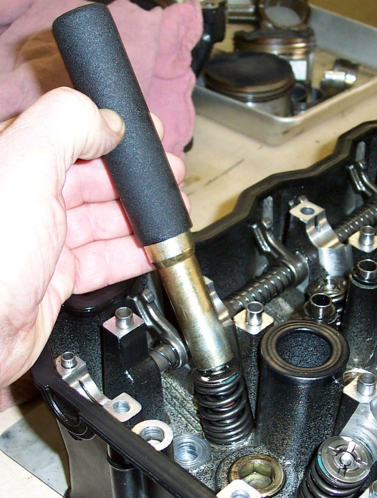

A valve seals the combustion chamber only if the valve face and its seat in the head meet all the way round. When the seat is pitted or burnt, the engine loses compression and runs badly. This page explains what a good seat looks like, how a workshop recuts it and how the valve is lapped in. Cutting needs special tools, so most riders pay a machine shop and do the lapping and checks themselves.
Safety
- Wear eye protection. Cutters and lapping compound throw fine particles.
- Keep lapping compound out of the guides and ports. It is a grinding paste and wears the guide and valve stem.
- Clean every part of the head thoroughly afterwards.
You need
- A head with the valves out (Remove and refit valves, springs and valve seals).
- Seat cutters, or a machine shop that cuts seats.
- Fine valve lapping compound and a lapping tool. A short piece of hose on the valve stem also works.
- New valves if the old ones are pitted or thin at the edge. Valve coatings can be very thin, so grinding old valves on a machine may cut through them.
- Your bike's manual for the seat angle and seat width.
What a good seat looks like
- The seat is smooth, with no pits, burn marks or cracks.
- The seat angle is usually 45 degrees. Some small engines use 30 degrees. Use the angle in your manual.
- Seat width is within the manual limit. A wide seat is acceptable on a simple engine. A narrow seat from heavy cutting is not.
- The valve edge is not thin or sharp. A thin edge overheats.
Steps
- Inspect each seat and valve face with the valve fitted and the head upside down. Look for pits, rings and burnt areas.
- If a seat is pitted or burnt, have it cut. A cutter turns in the guide and removes a thin layer at the seat angle until the surface is smooth and even.
- Where the manual calls for several angles, the machine shop cuts the extra angles to set the seat width.
- Clean the head with solvent, then blow with air. Remove every trace of cutting swarf.
- Lapping, if the angles are right: put a little fine compound on the valve face, push the valve into its guide and put a lapping tool or hose on the stem.
- Turn the valve back and forth between your palms with light pressure. Lift it now and then to spread the compound. Do not spin it continuously with a drill.
- Stop when the seat shows an even, matte grey band all the way round with no shiny lines.
- Wash all compound off the valve, seat, guide and port with solvent.
- Test the seat with a solvent leak test (Check a valve and seat with a solvent leak test).
Check your work
- A continuous, even matte band on both valve and seat.
- No solvent seeps past the valve face.
- No compound left in the guides.
When to go to a workshop
- The seat is badly pitted, cracked or loose in the head.
- Guide play is over the limit. The guide must be replaced and the seat recut afterwards.
- You have no seat cutters. A machine shop will do the cut for a small fee.
If it did not fix the problem
- Test engine compression after reassembly.
- Check and adjust valve clearance.